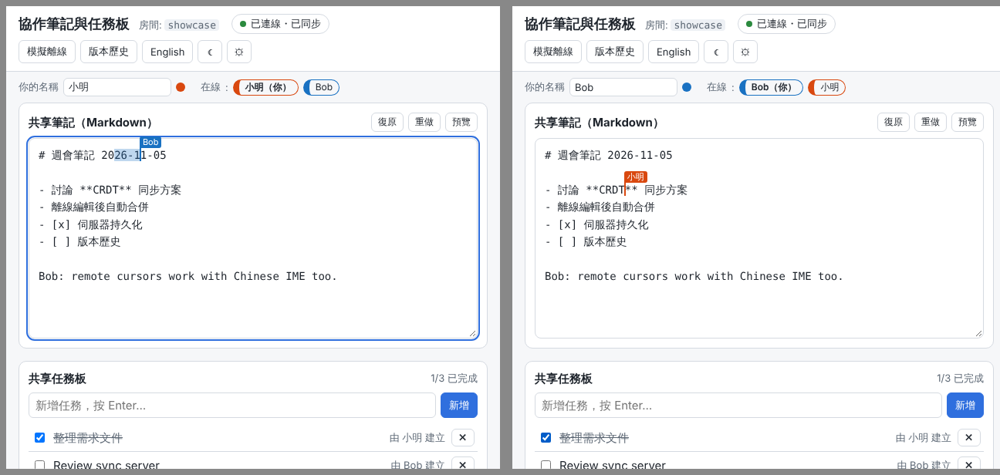
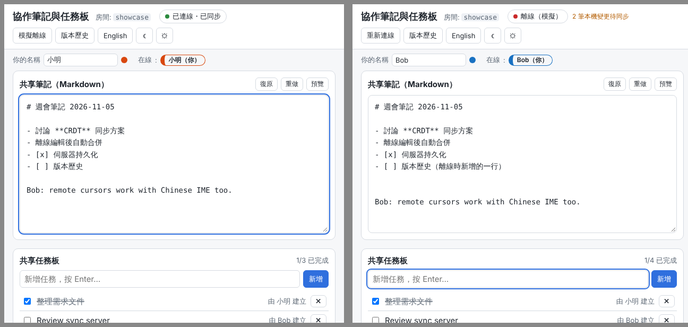
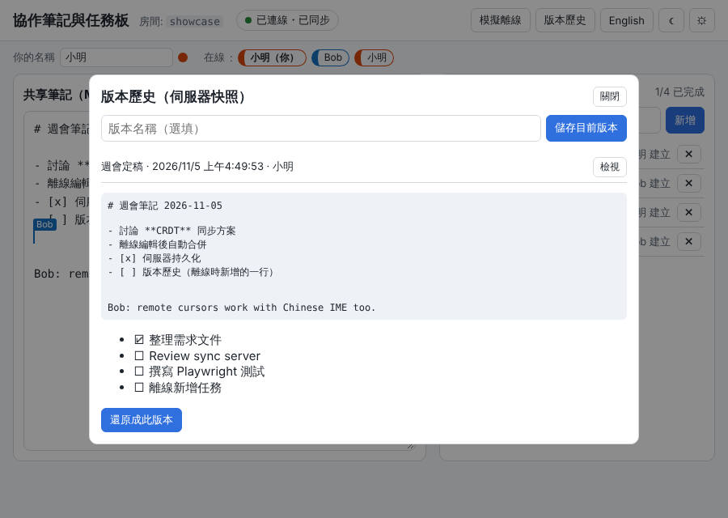
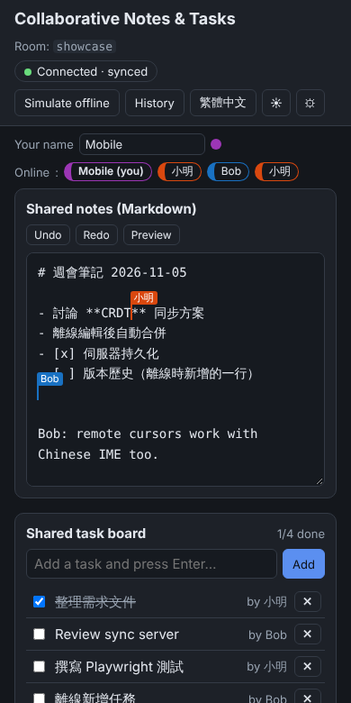

概覽
這是一個「本機優先（local-first）」的協作 Web 應用：多人同時編輯同一份 Markdown 筆記 與 任務清單，即時看到彼此的游標與在線狀態；離線時照常編輯，重新連線後自動合併，不會遺失任何一方的修改。
- CRDT 資料模型（Yjs 13.6）：筆記為
Y.Text，任務板為Y.Array<Y.Map>；合併不需要中央仲裁、與到達順序無關。 - 在線狀態（awareness）：使用者名稱、顏色、遠端游標／選取範圍（以
Y.RelativePosition傳遞，並發編輯時位置仍正確）。 - 復原／重做（
Y.UndoManager）：只復原「自己」的修改，不會撤銷別人的。 - 自架同步伺服器（Node +
ws+y-protocols）：同一個行程同時提供靜態網頁、JSON API 與/ws/<房間>WebSocket。 - 伺服器持久化：每筆更新附加寫入 append log，定期壓縮成快照（不需資料庫）；伺服器被強制終止後重啟，資料仍在。
- 瀏覽器離線：
y-indexeddb保存文件；Service Worker 快取 App 外殼，斷網時重新整理頁面仍可開啟與編輯。介面提供「模擬離線」按鈕方便展示。 - 版本歷史：把伺服器上的目前狀態存成具名版本，可檢視並一鍵還原（還原本身也可復原）。
- 中文輸入法：
<textarea>綁定在選字（composition）期間不寫入 CRDT、也不覆蓋輸入框；期間收到的遠端修改會排隊，選字完成後再轉換位置套用。 - 繁體中文（預設）／English 切換、淺色／深色主題、手機寬度（390px）可用。

技術與版本（皆鎖定確切版本）
| 套件 | 版本 | 用途 |
|---|---|---|
| yjs | 13.6.33 | CRDT 核心（Y.Doc / Y.Text / Y.Array / Y.Map / UndoManager / RelativePosition） |
| y-protocols | 1.0.7 | 同步協定（sync step 1/2、update）與 awareness 協定 |
| y-websocket | 3.1.0 | 僅使用其「瀏覽器端」WebsocketProvider；伺服器端為本專案自寫 |
| y-indexeddb | 9.0.12 | 瀏覽器端離線持久化 |
| lib0 | 0.2.118 | Yjs 的二進位編碼工具 |
| ws | 8.22.0 | Node WebSocket 伺服器 |
| esbuild（dev） | 0.28.2 | 打包前端為 public/dist/app.js（不使用 CDN） |
| playwright（dev） | 1.63.0 | 端對端測試與截圖 |
資料夾結構
05-crdt-collab/
├─ README.html / README.md 本文件 / 簡短指引
├─ package.json / package-lock.json
├─ run-server.bat run-debug.bat run-tests.bat Windows 啟動器（ASCII + CRLF）
├─ collab.ps1 PowerShell 主腳本（UTF-8 BOM）
├─ src/server/ index.js（HTTP+WS）、rooms.js（同步協定）、store.js（磁碟）、logger.js、config.js
├─ src/client/ main.js（組裝）、binding.js（textarea↔Y.Text）、cursors.js、markdown.js、i18n.js
├─ src/shared/textdiff.js 文字差異與索引轉換（前端與單元測試共用）
├─ public/ index.html、app.css、sw.js、favicon.svg、dist/（建置產物，不納入版控）
├─ scripts/ build.mjs（esbuild）、screenshots.mjs（重產 examples/*.png）
├─ test/ unit.test.mjs（Node）、e2e.test.mjs（Playwright）
└─ examples/ 截圖快速開始
需求：Node.js 20 以上（建議 22 LTS）。不需要資料庫、不需要網際網路（安裝套件時除外）。
Windows
- 在檔案總管開啟
05-crdt-collab資料夾，雙擊run-server.bat。 視窗顯示目前資料夾、Node 版本；第一次會自動執行npm ci與npm run build，接著出現server.listening url=http://127.0.0.1:8705/，並自動開啟瀏覽器。 - 要看詳細日誌改用
run-debug.bat（等同加上--debug）。 - 要跑完整測試用
run-tests.bat（第一次會下載 Playwright 的 Chromium，約 150 MB）。 - 停止伺服器：在視窗按 Ctrl+C（會先把文件壓縮存檔），再按任意鍵關閉。
資料與日誌預設在 %ProgramData%\NewMiscCode\05-crdt-collab（rooms\ 與 logs\ 子資料夾）。也可在 PowerShell 直接呼叫：
powershell -ExecutionPolicy Bypass -File collab.ps1 start --port 9000 --data-dir D:\collab-dataLinux / macOS
cd 05-crdt-collab
npm ci
npm run build
npm start # = node src/server/index.js，開啟 http://127.0.0.1:8705/
npm run dev # 同上但 --debug
npm test # 建置 + Node 單元測試 + Playwright 端對端測試Linux 預設資料位置為專案內的 ./data（已列入 .gitignore）。
伺服器參數
| 參數 | 環境變數 | 預設 | 說明 |
|---|---|---|---|
--port <n> | COLLAB_PORT | 8705 | HTTP 與 WebSocket 共用埠；0 = 隨機 |
--host <addr> | COLLAB_HOST | 127.0.0.1 | 區網協作請用 0.0.0.0（見「限制」關於 Service Worker） |
--data-dir <dir> | COLLAB_DATA_DIR | Windows：%ProgramData%\NewMiscCode\05-crdt-collab；其他：./data | 文件儲存位置 |
--log-dir <dir> | COLLAB_LOG_DIR | <data-dir>/logs | JSONL 日誌 |
--compact-every <n> | — | 200 | append log 累積 n 筆更新後壓縮成快照 |
--debug | COLLAB_DEBUG=1 | 關 | 記錄每筆更新、awareness、同步訊息 |
--open | — | 關 | 啟動後開啟瀏覽器（Windows 啟動器預設開啟） |
--help | — | 顯示說明 |
使用說明
網址參數
| 參數 | 範例 | 說明 |
|---|---|---|
room | ?room=weekly | 房間名稱（英數、_、-，最多 64 字）；預設 demo。同房間的人共用同一份文件。 |
name / color | ?name=小明&color=%23d9480f | 指定顯示名稱與顏色（否則隨機，並記在 localStorage） |
lang | ?lang=en | 介面語言 zh-TW／en |
debug | ?debug=1 | 開啟除錯面板，並把事件以 console.debug 輸出 |
sw | ?sw=0 | 不註冊 Service Worker |
ws | ?ws=ws://host:8705/ws | 改用其他同步伺服器 |
畫面
- 頂列：房間名稱、連線狀態（綠＝已連線・已同步、黃＝連線中、紅＝離線／模擬離線）、待同步的本機變更數、按鈕：模擬離線／重新連線、版本歷史、English／繁體中文、☾／☀ 主題、⚙ 除錯面板。
- 你的名稱：可直接修改，其他人的在線清單與游標標籤即時更新。
- 共享筆記：純文字 Markdown。Ctrl+Z 復原、Ctrl+Y（或 Ctrl+Shift+Z）重做，也可按按鈕；「預覽」切換成渲染後的 Markdown（標題、清單、勾選框、粗體、斜體、程式碼、連結）。
- 共享任務板：輸入後按 Enter 新增；勾選完成、✕ 刪除、「清除已完成」。任務的新增／勾選／刪除也在復原範圍內。
- 版本歷史：「儲存目前版本」把伺服器上的狀態存成具名版本；「檢視」顯示當時的筆記與任務；「還原成此版本」以一次可復原的修改把內容換回去（其他人即時看到）。



逐步驗證指南
以下步驟讓同事在自己電腦上重現所有功能。「兩位使用者」可用：一般視窗 + InPrivate／無痕視窗，或 Edge + Chrome（兩者的 IndexedDB 互相獨立，等同兩台電腦）。
A. 自動化測試（約 20 秒）
- Windows 雙擊
run-tests.bat；Linux 執行npm test。 最後顯示# tests 19、# pass 19、# fail 0，結束碼 0。
| 測試 | 驗證內容 |
|---|---|
| unit：three replicas converge… | 3 份 Y.Doc 各做 150 次隨機修改（中文、emoji、任務增刪改），以隨機順序、隨機分批交換更新，20 個亂數種子全部收斂成相同內容與相同 state vector |
| unit：offline edits on both sides… | 兩邊離線在同一位置插入，再以 state vector 交換差異：兩邊內容相同且兩份修改都在 |
| unit：diffText / mapIndexThroughDelta | 文字差異不切斷 surrogate pair；選字期間的遠端 delta 位置轉換正確 |
| unit：RoomStore | append log 重新載入、壓縮成快照、模擬寫到一半斷電（殘缺尾端）仍可正確載入 |
| unit：WebSocket server | 兩個 Node 端 WebsocketProvider 經伺服器同步、awareness 傳遞；關閉並重啟伺服器後新客戶端取得相同內容；日誌含必要事件 |
| e2e：presence | 兩個獨立瀏覽器 context：在線清單互相看到；遠端游標 .remote-caret[data-user="Bob"] 出現 |
| e2e：concurrent typing | 兩人同時打字（一個在開頭、一個在結尾）＋同時新增任務 → 兩邊 Y.Text、textarea、任務完全一致 |
| e2e：Chinese / IME | insertText 中文；以 Chrome DevTools Protocol 產生真實 IME 選字（ㄓㄨㄥ→中），選字中另一人在開頭插入：選字文字不被打斷、未確認的注音不寫入 CRDT、確認後兩邊一致；另測「取消選字（Esc）」時遠端修改照常顯示、游標不跳回開頭 |
| e2e：undo/redo | Ctrl+Z 只撤銷自己的修改，Ctrl+Y 重做 |
| e2e：offline via UI toggle | 兩人都「模擬離線」各自編輯文字與任務（含刪除），重新連線後全部合併、無遺失，待同步計數歸零 |
| e2e：browser offline | 瀏覽器整個離線後重新整理：頁面由 Service Worker 快取載入、內容由 IndexedDB 還原，可繼續編輯，恢復網路後同步 |
| e2e：server SIGKILL | 強制終止伺服器（不經正常關閉），兩位使用者維持離線，重啟後一個全新使用者（空 IndexedDB）直接從伺服器磁碟取得完整內容 |
| e2e：version history | 儲存版本 → 他人修改 → 檢視 → 還原，兩邊一致 |
| e2e：language / theme / 390px | 中英切換（含 <html lang>）、主題切換、手機寬度無水平捲動 |
| e2e：debug mode | ?debug=1 顯示除錯面板、console.debug 輸出 [collab] ws.sync 等事件、window.__collab.debugLines 有內容 |
| e2e：console | 所有頁面無非預期的 console error（伺服器停機／離線期間的 WebSocket 連線失敗訊息屬預期，已排除） |
B. 手動驗證
- 啟動伺服器（
run-server.bat或npm start）。 主控台出現server.listening url=http://127.0.0.1:8705/ dataDir=…。 - 視窗 1 開
http://127.0.0.1:8705/?room=demo&name=小明；視窗 2（InPrivate）開http://127.0.0.1:8705/?room=demo&name=Bob。 兩邊頂列皆為綠色「已連線・已同步」；「在線」清單同時列出「小明（你）」與「Bob」。主控台出現兩筆ws.connect。 - 在視窗 1 筆記區輸入英文與中文（用注音或倉頡選字）。 視窗 2 幾乎同時出現相同文字；視窗 2 的筆記區有一條小明顏色的游標與名稱標籤。選字視窗出現期間，視窗 2 看不到注音符號，確認後才出現完整的中文字。
- 在視窗 1 選字（候選字視窗開著）時，請另一人在視窗 2 開頭打字。 視窗 1 的候選字視窗不會被打斷；確認選字後，視窗 1 才同時看到 Bob 的文字與自己的字，兩邊內容一致。
- 在視窗 2 選取一段文字。 視窗 1 中那段文字以 Bob 的顏色半透明標示。
- 兩邊各新增一個任務並勾選對方的任務。 兩邊任務清單一致，右上角顯示「1/2 已完成」等統計。
- 在視窗 1 按 Ctrl+Z。 只撤銷小明自己最近的修改，Bob 的文字不受影響；Ctrl+Y 可重做。
- 兩邊都按「模擬離線」，各自修改同一行與任務（例如一邊刪任務、一邊新增任務）。 狀態變紅色「離線（模擬）」，並顯示「N 筆本機變更待同步」；兩邊內容暫時不同；在線清單只剩自己，對方的遠端游標也立即消失（伺服器在連線關閉時移除其 awareness）。
- 兩邊按「重新連線」。 數秒內恢復綠色；兩邊內容完全一致，雙方離線期間的所有修改都在；待同步計數消失。
- 在伺服器視窗按 Ctrl+C 停止伺服器。
主控台顯示
SIGINT received, flushing documents...與persist.compact；瀏覽器狀態轉為「連線中…」再變「離線」，仍可繼續編輯。 - 重新啟動伺服器，然後開第三個視窗（另一個瀏覽器或清除過網站資料的 InPrivate）進入同一房間。
主控台
persist.load room=demo snapshotBytes=…；第三個視窗立刻看到完整內容（證明資料來自伺服器磁碟，而非瀏覽器）；視窗 1、2 自動重新連線並把停機期間的修改送上去。 - （瀏覽器離線）在視窗 1 開 DevTools（F12）→ Network → 勾選 Offline，然後按 F5。 頁面仍可開啟（Service Worker 快取），內容由 IndexedDB 還原；可編輯。取消 Offline 後數秒內自動同步。
- 按「版本歷史」→ 輸入名稱 →「儲存目前版本」；修改一些內容；再開「版本歷史」→「檢視」→「還原成此版本」。 內容回到儲存時的樣子，所有人同步看到；按「復原」可取消這次還原。
- 按「English」與主題按鈕；把視窗縮到手機寬度。 介面全部切換成英文（再按「繁體中文」切回）；深色主題正常；窄螢幕時筆記與任務改為上下排列、沒有水平捲軸。
- 網址加上
?debug=1並開 DevTools Console（記得把等級設為包含 Verbose）。 看到[collab] doc.update {bytes…, origin:"local"}、ws.status等訊息；頁面下方出現除錯面板（clientID、state vector、文件大小…）；Console 輸入__collab.text()會傳回筆記內容。 - 開啟日誌檔
%ProgramData%\NewMiscCode\05-crdt-collab\logs\server-YYYY-MM-DD.jsonl（Linux：data/logs/）。 每行一個 JSON，含ws.connect、persist.load、persist.compact等事件；用--debug時另有doc.update（含 bytes）、persist.append。
開發者指南
架構與資料流
瀏覽器 A Node 伺服器 (src/server) 瀏覽器 B
┌──────────────────────────┐ ┌───────────────────────────────┐ ┌──────────────────────┐
│ textarea ─(input/IME)─┐ │ │ index.js HTTP 靜態/API + upgrade │ │ │
│ binding.js diff ▼ │ WebSocket │ rooms.js Room = Y.Doc+Awareness │ WebSocket │ WebsocketProvider │
│ Y.Doc (Y.Text/Y.Array)───┼── /ws/room ──▶ readSyncMessage → doc.on(update)─┼──broadcast──▶ applyUpdate │
│ │ y-indexeddb (離線) │ sync+aware │ │ store.js append log │ │ → observer → 畫面 │
│ │ UndoManager │ │ ▼ 定期壓縮 snapshot.bin │ │ │
│ └ awareness(游標/名稱)──┼──────────────▶ 轉送 awareness（不落地） ─┼─────────────▶ 在線清單 / 遠端游標 │
└──────────────────────────┘ └───────────────────────────────┘ └──────────────────────┘- 使用者在 textarea 輸入 →
binding.js比對「上次同步的字串」與目前內容，得到一段 刪除＋插入，以doc.transact(…, TYPING)寫入Y.Text。 Y.Doc發出update（二進位差異）：y-indexeddb寫入本機；WebsocketProvider送出 sync update；UndoManager記錄（只追蹤 TYPING／LOCAL 來源）。- 伺服器
Room.handleMessage用y-protocols/sync套用到伺服器端的 Y.Doc，觸發onUpdate：轉送給同房間其他連線、附加寫入updates.log、累積 N 筆後壓縮。 - 其他瀏覽器套用 update →
Y.Text.observe→ binding 依 delta 平移本機游標並更新 textarea；RemoteCursors重畫游標。 - 重新連線時 provider 先送 sync step 1（自己的 state vector），對方回 sync step 2（對方有、自己缺的所有更新），雙向各一次即完成合併。
CRDT 概念速覽
- CRDT（Conflict-free Replicated Data Type）：每個副本可以獨立修改，只要最終收到同一組更新（不論順序、重複幾次），就保證得到相同結果。不需要鎖、不需要伺服器裁決。
- Item 與 ID：Yjs 把每個插入的字元（連續插入會合併成一個 item）標上唯一 ID
(clientID, clock)，並記住插入當時左右鄰居的 ID（origin）。兩人在同一位置插入時，用 ID 決定穩定的先後順序，所以每個副本排出來都一樣。 - 刪除：刪除不是真的移除，而是標記成 tombstone（delete set）；開啟 GC 時內容會被丟棄、只留下極小的佔位結構。
- State vector：
{clientID: 已看過的最大 clock}。同步時交換 state vector，就能精準算出對方缺少的更新（Y.encodeStateAsUpdate(doc, remoteSV)）。 - Update 冪等且可交換：重複套用或亂序套用都沒問題 —— 這也是伺服器 append log 可以「重播兩次」、IndexedDB 與伺服器可以各自持有完整副本的原因。
- Awareness：與文件分開的「暫態」狀態（名稱、顏色、游標），不寫入文件、不落地；每個 client 定期更新，30 秒沒更新視為離開。
- RelativePosition：以 item ID 表示的位置（「某個字的左邊」），遠端插入／刪除後仍指向同一個字，用來傳遞游標。
- UndoManager：只把
trackedOrigins中來源的交易放進復原堆疊，因此只會撤銷自己的修改，且撤銷本身也是普通的 CRDT 修改，會同步給其他人。
模組職責
| 檔案 | 職責 |
|---|---|
src/server/index.js | 解析參數、建立 HTTP 伺服器（靜態檔、/api/health、/api/rooms/:room、/api/rooms/:room/versions[/:id]）、WebSocket upgrade（只接受 /ws/<合法房名>）、優雅關閉（SIGINT/SIGTERM 先壓縮存檔）。匯出 startServer(cfg) 供測試使用。 |
src/server/rooms.js | RoomManager／Room：房間的 Y.Doc 與 Awareness、y-protocols 訊息（0 = sync、1 = awareness、3 = query awareness）、廣播、心跳 ping（30 秒）、最後一人離開時壓縮並在 30 秒後卸載。 |
src/server/store.js | RoomStore：snapshot.bin + updates.log（每筆為 4-byte little-endian 長度 + update），所有寫入以 promise 佇列序列化；壓縮採「寫暫存檔 → rename」原子替換；載入時忽略殘缺尾端並重寫乾淨快照；具名版本存於 versions/。 |
src/server/logger.js | JSONL 日誌（依日期分檔）+ 主控台精簡輸出。 |
src/server/config.js | 參數／環境變數與 OS 相關預設路徑。 |
src/client/main.js | 組裝：Y.Doc、IndexeddbPersistence、WebsocketProvider、UndoManager、任務板、在線清單、版本歷史、語言／主題、除錯面板、Service Worker 註冊、window.__collab。 |
src/client/binding.js | textarea ↔ Y.Text 雙向綁定與 IME 處理（composition 期間延後、delta 位置轉換）。 |
src/client/cursors.js | 遠端游標／選取：在 textarea 上疊一層字型完全相同的透明「鏡像」元素，於對應位置插入彩色游標與標籤。 |
src/client/markdown.js | 安全的 Markdown 子集渲染（先跳脫 HTML 再格式化，連結只允許 http/https）。 |
src/client/i18n.js | zh-TW／en 字串與 data-i18n* 套用。 |
src/shared/textdiff.js | 單區段文字差異、依 Yjs delta 轉換索引（純函式，單元測試覆蓋）。 |
public/sw.js | App 外殼「網路優先、離線用快取」；不攔截 /api/ 與 /ws/。 |
磁碟格式
<data-dir>/
├─ rooms/<room>/snapshot.bin Y.encodeStateAsUpdate(doc)
├─ rooms/<room>/updates.log [len u32 LE][update]...（壓縮後清空）
├─ rooms/<room>/versions/index.json [{id,label,author,createdAt,bytes}]
├─ rooms/<room>/versions/<id>.bin
└─ logs/server-YYYY-MM-DD.jsonl要在其他程式讀取文件：const d = new Y.Doc(); Y.applyUpdate(d, snapshot); 再依序套用 log 中每筆 update，然後 d.getText('notes').toString()。
如何擴充
- 新增共享欄位（例如文件標題）：在
main.js取doc.getMap('meta')，修改時用doc.transact(() => meta.set('title', v), LOCAL)（使其可復原），並以meta.observe更新畫面；若要納入復原，把它加進new Y.UndoManager([...])的型別陣列。伺服器不需要任何修改 —— 它不解讀內容。 - 新增語言：在
i18n.js的STRINGS加一組鍵值，並讓語言按鈕循環。 - 換成資料庫儲存：實作與
RoomStore相同介面（load(doc)、append(update)、compact(doc)、stats()、版本相關方法）即可，例如 SQLite 一張updates(room, seq, blob)表。 - 驗證／權限：在
index.js的server.on('upgrade')檢查 cookie 或 token（WebsocketProvider 可用params帶參數），拒絕時回 401 並socket.destroy()。 - 富文字編輯器：把 textarea 換成 ProseMirror／Tiptap／CodeMirror 6，並使用對應的 Yjs 綁定（y-prosemirror、y-codemirror.next），同步與伺服器不需改動。
- 重新建置前端：修改
src/client後執行npm run build；重產截圖執行npm run screenshots（使用暫存資料夾，不會動到正式資料）。
除錯與日誌
伺服器 JSONL 日誌
位置：<log-dir>/server-YYYY-MM-DD.jsonl（Windows 預設 %ProgramData%\NewMiscCode\05-crdt-collab\logs，Linux 預設 ./data/logs）。GET /api/health 會回傳目前的日誌檔路徑。
{"ts":"2026-11-05T04:38:02.733Z","level":"info","event":"persist.load","room":"demo","snapshotBytes":0,"logFrames":0,"tornTail":false}
{"ts":"2026-11-05T04:38:02.741Z","level":"info","event":"ws.connect","room":"demo","conn":"c1","remote":"127.0.0.1"}
{"ts":"2026-11-05T04:38:03.120Z","level":"debug","event":"doc.update","room":"demo","bytes":27,"from":"c1","docBytes":412}
{"ts":"2026-11-05T04:38:03.121Z","level":"debug","event":"persist.append","room":"demo","bytes":27,"logFrames":5}| 事件 | 等級 | 說明 |
|---|---|---|
server.listening / server.shutdown | info | 啟動網址、資料／日誌目錄；關閉 |
ws.connect / ws.close / ws.timeout / ws.rejected | info / warn | 連線生命週期（含連線編號 conn、關閉碼） |
doc.update | debug | 每筆文件更新的位元組數、來源連線、整份文件大小 |
ws.sync / awareness.update | debug | 同步訊息步驟與大小；在線狀態變化 |
persist.load / persist.append / persist.compact | info / debug / info | 載入（快照大小、log 筆數、是否有殘缺尾端）、附加、壓縮 |
version.save | info | 儲存具名版本 |
persist.error / http.error / ws.message_error | error | 含 stack |
快速篩選（PowerShell）：Get-Content server-2026-11-05.jsonl | ConvertFrom-Json | Where-Object level -eq 'error'；Linux：grep '"level":"error"' data/logs/*.jsonl。
瀏覽器端
?debug=1（或在 Console 執行__collab.setDebug(true)，會記住）：事件以console.debug('[collab]', …)輸出（Chrome/Edge 需把 Console 等級設為含 Verbose），並開啟除錯面板。- ⚙ 按鈕：除錯面板每秒更新 clientID、連線／同步狀態、IndexedDB 是否載入、文字長度、任務數、文件位元組數、更新次數、待同步數、在線人數、復原堆疊深度、state vector，以及最近 40 筆事件。
window.__collab：doc、ytext、ytasks、provider、awareness、undoManager、idb、binding、Y、text()、tasks()、addTask(text)、status()、debugLines。例如：__collab.text() // 目前筆記 __collab.Y.encodeStateAsUpdate(__collab.doc).length // 文件大小 __collab.awareness.getStates() // 所有在線者 __collab.provider.disconnect(); __collab.provider.connect()- DevTools → Application → IndexedDB →
crdt-collab:<room>可看到本機保存的更新；Network → WS 可看到二進位同步訊息。
限制與疑難排解
已知限制
- 筆記是純文字 textarea（Markdown 原文），不是所見即所得編輯器。遠端游標以「鏡像元素」計算位置，在極少數字型回退（fallback）或捲軸出現／消失的瞬間可能偏移一兩個字。
- 沒有帳號、驗證與權限：知道網址與房間名稱的人都能編輯。請只在信任的網路使用（預設只綁 127.0.0.1）。
- 版本歷史保存的是伺服器當下的狀態；離線中尚未同步的本機修改不包含在內。伺服器以 GC 模式運作，因此沒有使用
Y.snapshot做逐筆時光回溯，而是以完整狀態存版本。 - Service Worker 只在安全環境（
localhost／127.0.0.1／HTTPS）啟用。用--host 0.0.0.0讓區網同事以http://192.168.x.x連線時，即時協作與 IndexedDB 正常，但「離線時重新整理頁面」不可用。 - IndexedDB 依「來源（origin）」區分：
http://localhost:8705與http://127.0.0.1:8705是兩個不同的本機副本。 - 伺服器在單一行程記憶體中保存使用中的房間；未設計多節點水平擴充。
.ps1／.bat啟動器的語法依慣例撰寫，但本次自動化驗證在 Linux 進行（未在實體 Windows 執行）。
疑難排解
| 症狀 | 原因與處理 |
|---|---|
EADDRINUSE | 埠被占用：改用 --port 9000，或關閉另一個伺服器視窗。 |
頁面顯示 client bundle missing | 尚未建置：執行 npm run build（Windows 啟動器會自動處理）。 |
| PowerShell 顯示「已停用指令碼執行」 | 請使用 .bat（已帶 -ExecutionPolicy Bypass），或 powershell -ExecutionPolicy Bypass -File collab.ps1 start。 |
| 狀態一直是「連線中…」／「離線」 | 伺服器沒在執行、埠不同或防火牆阻擋；檢查主控台與 /api/health。修改仍保存在 IndexedDB，恢復後自動同步。 |
| 刪掉伺服器資料後，舊內容又「復活」 | 這是 CRDT 的正常行為：瀏覽器 IndexedDB 仍有完整副本，連線後會補送給伺服器。要真正重置：停止伺服器、刪除 <data-dir>/rooms/<room>，並清除每個瀏覽器的網站資料（或改用新的房間名稱）。 |
| 在線清單中有已關閉的人 | awareness 逾時約 30 秒；正常關閉分頁會立即移除。 |
測試時 Executable doesn't exist | Playwright 瀏覽器未安裝：npx playwright install chromium（run-tests.bat 會自動執行）。 |
| 中文輸入出現重複字 | 請回報瀏覽器與輸入法版本並附 ?debug=1 的 Console 輸出（含 ime.compositionstart/end、binding.local）。 |
English summary
crdt-collab is a local-first, real-time collaborative web app: a shared Markdown note (Y.Text) and a shared task board (Y.Array of Y.Map), built on Yjs 13.6.33. It shows presence (name, color, remote carets and selections via awareness + relative positions), supports per-user undo/redo (Y.UndoManager), and keeps working offline (y-indexeddb + a service worker for the app shell; a "Simulate offline" button for demos). Edits from both sides merge on reconnect without loss.
- Server: own Node implementation of the y-protocols sync/awareness wire format on top of
ws(/ws/<room>), serving the static client and a small JSON API. Persistence without a database: an append-only update log per room, compacted into an atomically replaced snapshot; survives SIGKILL (torn tail frames are ignored). Named versions (server snapshots) can be viewed and restored. - IME-safe textarea binding: nothing is written while composing; remote deltas received during composition are queued and the local diff is transformed through them on
compositionend. - Run: Windows
run-server.bat/run-debug.bat/run-tests.bat(ASCII .bat → UTF-8-BOMcollab.ps1→ node). Linux:npm ci && npm run build && npm start→ http://127.0.0.1:8705/. - Options:
--port,--host,--data-dir(default%ProgramData%\NewMiscCode\05-crdt-collabon Windows,./dataelsewhere),--log-dir,--compact-every,--debug,--open. - Debugging: JSONL server logs (
ws.connect,doc.updatewith byte sizes,persist.*); client?debug=1→console.debug+ debug panel;window.__collabexposes the doc, provider, awareness and helpers. - Tests:
npm test= 7 Node tests (random 3-replica convergence, offline merge, diff helpers, disk store incl. torn tail, real WebSocket server restart) + 12 Playwright tests with two isolated browser contexts (presence, concurrent typing, Chinese input incl. real CDP IME composition with a concurrent remote edit, undo, offline toggle merge, browser-offline reload from cache, server SIGKILL restart with a fresh client, version restore, language/theme, 390px layout,?debug=1mode, no console errors). - Limitations: plain textarea (no rich text), no authentication, version history stores server state only, service worker requires localhost/HTTPS, launchers were not executed on a real Windows machine here.